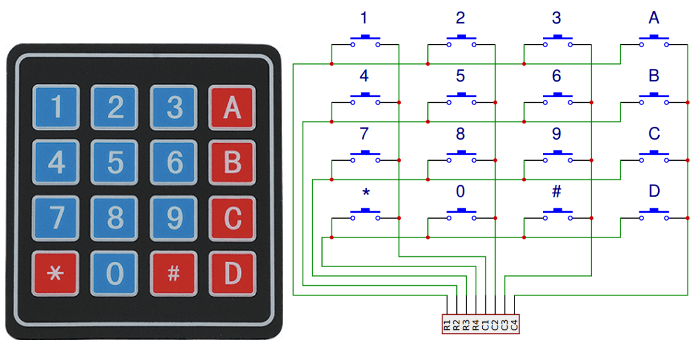
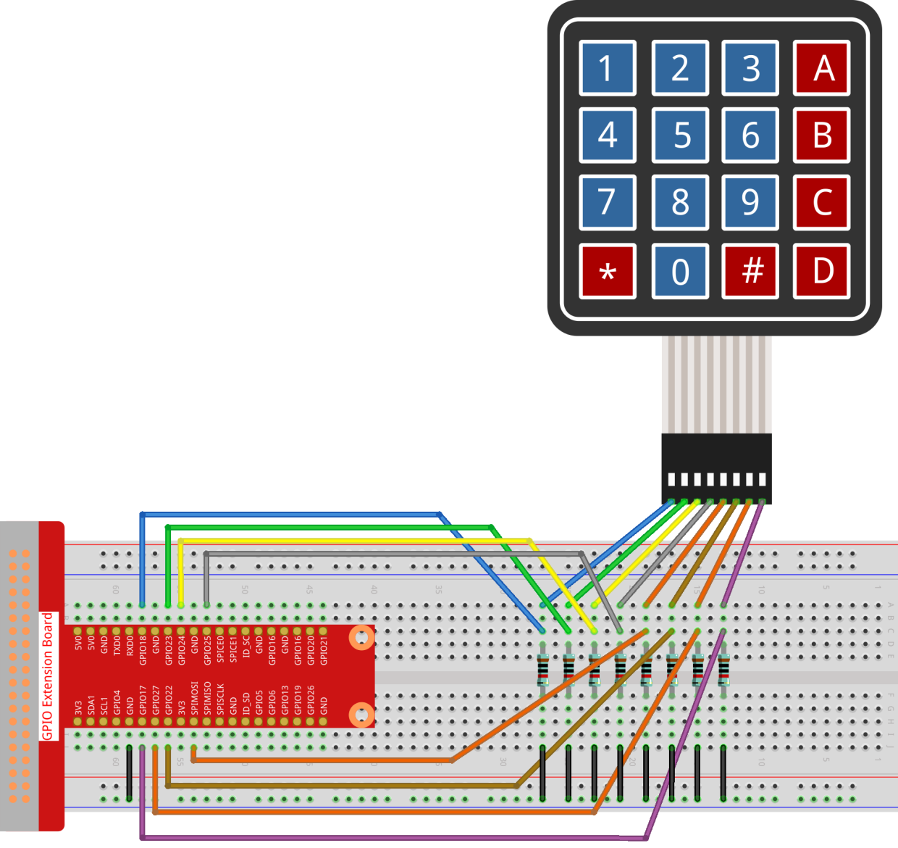

Nota
Ciao, benvenuto nella SunFounder Raspberry Pi & Arduino & ESP32 Enthusiasts Community su Facebook! Approfondisci l’uso di Raspberry Pi, Arduino e ESP32 insieme ad altri appassionati.
Perché unirsi?
Supporto esperto: risolvi problemi post-vendita e sfide tecniche con l’aiuto della nostra community e del nostro team.
Impara e condividi: scambia consigli e tutorial per migliorare le tue competenze.
Anteprime esclusive: ottieni l’accesso anticipato a nuovi annunci di prodotti e anticipazioni.
Sconti speciali: goditi sconti esclusivi sui nostri prodotti più recenti.
Promozioni e omaggi festivi: partecipa a promozioni speciali e omaggi durante le festività.
👉 Pronto a esplorare e creare con noi? Clicca su [Qui] e unisciti subito!
2.1.5 Tastiera
Introduzione
Una tastiera è una matrice rettangolare di pulsanti. In questo progetto, la utilizzeremo per inserire caratteri.
Componenti

Principio
Tastiera
Una tastiera è una matrice rettangolare di 12 o 16 pulsanti OFF-(ON). I loro contatti sono accessibili tramite un connettore adatto per un collegamento con un cavo a nastro o per l’inserimento in un circuito stampato. In alcune tastiere, ciascun pulsante si connette a un contatto separato nel connettore, mentre tutti i pulsanti condividono una massa comune.
Più frequentemente, i pulsanti sono codificati in matrice, il che significa che ognuno di essi unisce una coppia unica di conduttori in una matrice. Questa configurazione è adatta per il polling da parte di un microcontrollore, che può essere programmato per inviare a turno un impulso di uscita a ciascuno dei quattro fili orizzontali. Durante ogni impulso, il microcontrollore verifica in sequenza i quattro fili verticali rimanenti per determinare quale, se presente, stia trasmettendo un segnale. È consigliabile aggiungere resistenze di pullup o pulldown ai fili di ingresso per evitare che i segnali del microcontrollore si comportino in modo imprevedibile quando non è presente alcun segnale.
Schema Elettrico


Procedure Sperimentali
Passo 1: Costruisci il circuito.
{kind=link}
Passo 2: Apri il file del codice.
cd ~/davinci-kit-for-raspberry-pi/c/2.1.5/
Passo 3: Compila il codice.
gcc 2.1.5_Keypad.cpp -lwiringPi
Passo 4: Esegui il programma.
sudo ./a.out
Dopo l’esecuzione del codice, i valori dei pulsanti premuti sulla tastiera (Valore pulsante) verranno stampati sullo schermo.
Nota
Se non funziona dopo l’esecuzione o compare un messaggio di errore: "wiringPi.h: No such file or directory", consulta Il codice C non funziona?.
Codice
#include <wiringPi.h>
#include <stdio.h>
#define ROWS 4
#define COLS 4
#define BUTTON_NUM (ROWS * COLS)
unsigned char KEYS[BUTTON_NUM] {
'1','2','3','A',
'4','5','6','B',
'7','8','9','C',
'*','0','#','D'};
unsigned char rowPins[ROWS] = {1, 4, 5, 6};
unsigned char colPins[COLS] = {12, 3, 2, 0};
void keyRead(unsigned char* result);
bool keyCompare(unsigned char* a, unsigned char* b);
void keyCopy(unsigned char* a, unsigned char* b);
void keyPrint(unsigned char* a);
void keyClear(unsigned char* a);
int keyIndexOf(const char value);
void init(void) {
for(int i=0 ; i<4 ; i++) {
pinMode(rowPins[i], OUTPUT);
pinMode(colPins[i], INPUT);
}
}
int main(void){
unsigned char pressed_keys[BUTTON_NUM];
unsigned char last_key_pressed[BUTTON_NUM];
if(wiringPiSetup() == -1){ //se l'inizializzazione di wiring fallisce, stampa un messaggio a schermo
printf("setup wiringPi failed !");
return 1;
}
init();
while(1){
keyRead(pressed_keys);
bool comp = keyCompare(pressed_keys, last_key_pressed);
if (!comp){
keyPrint(pressed_keys);
keyCopy(last_key_pressed, pressed_keys);
}
delay(100);
}
return 0;
}
void keyRead(unsigned char* result){
int index;
int count = 0;
keyClear(result);
for(int i=0 ; i<ROWS ; i++ ){
digitalWrite(rowPins[i], HIGH);
for(int j =0 ; j < COLS ; j++){
index = i * ROWS + j;
if(digitalRead(colPins[j]) == 1){
result[count]=KEYS[index];
count += 1;
}
}
delay(1);
digitalWrite(rowPins[i], LOW);
}
}
bool keyCompare(unsigned char* a, unsigned char* b){
for (int i=0; i<BUTTON_NUM; i++){
if (a[i] != b[i]){
return false;
}
}
return true;
}
void keyCopy(unsigned char* a, unsigned char* b){
for (int i=0; i<BUTTON_NUM; i++){
a[i] = b[i];
}
}
void keyPrint(unsigned char* a){
if (a[0] != 0){
printf("%c",a[0]);
}
for (int i=1; i<BUTTON_NUM; i++){
if (a[i] != 0){
printf(", %c",a[i]);
}
}
printf("\n");
}
void keyClear(unsigned char* a){
for (int i=0; i<BUTTON_NUM; i++){
a[i] = 0;
}
}
int keyIndexOf(const char value){
for (int i=0; i<BUTTON_NUM; i++){
if ((const char)KEYS[i] == value){
return i;
}
}
return -1;
}
Spiegazione del Codice
unsigned char KEYS[BUTTON_NUM] {
'1','2','3','A',
'4','5','6','B',
'7','8','9','C',
'*','0','#','D'};
unsigned char rowPins[ROWS] = {1, 4, 5, 6};
unsigned char colPins[COLS] = {12, 3, 2, 0};
Dichiara ciascun tasto della tastiera a matrice nell’array KEYS[] e definisce i pin per ogni riga e colonna.
while(1){
keyRead(pressed_keys);
bool comp = keyCompare(pressed_keys, last_key_pressed);
if (!comp){
keyPrint(pressed_keys);
keyCopy(last_key_pressed, pressed_keys);
}
delay(100);
}
Questa è la parte della funzione principale che legge e stampa il valore del pulsante.
La funzione keyRead() legge lo stato di ciascun pulsante.
KeyCompare() e keyCopy() vengono usati per verificare se lo stato di un pulsante è cambiato (ossia, se è stato premuto o rilasciato).
keyPrint() stamperà il valore del pulsante con livello attuale alto (pulsante premuto).
void keyRead(unsigned char* result){
int index;
int count = 0;
keyClear(result);
for(int i=0 ; i<ROWS ; i++ ){
digitalWrite(rowPins[i], HIGH);
for(int j =0 ; j < COLS ; j++){
index = i * ROWS + j;
if(digitalRead(colPins[j]) == 1){
result[count]=KEYS[index];
count += 1;
}
}
delay(1);
digitalWrite(rowPins[i], LOW);
}
}
Questa funzione assegna un livello alto a ciascuna riga a turno, e quando il tasto nella colonna viene premuto, la colonna corrispondente ottiene un livello alto. Dopo il ciclo di verifica a due livelli, la compilazione dello stato del tasto genererà un array (result[]).
Se viene premuto il pulsante 3:

RowPin[0] scrive il livello alto e colPin[2] riceve il livello alto. ColPin[0], colPin[1] e colPin[3] ricevono un livello basso.
Questo ci fornisce 0,0,1,0. Quando rowPin[1], rowPin[2] e rowPin[3] sono impostati su livello alto, colPin[0]~colPin[4] riceveranno un livello basso.
Dopo aver completato il ciclo di verifica, verrà generato un array:
result[BUTTON_NUM] {
0, 0, 1, 0,
0, 0, 0, 0,
0, 0, 0, 0,
0, 0, 0, 0};
bool keyCompare(unsigned char* a, unsigned char* b){
for (int i=0; i<BUTTON_NUM; i++){
if (a[i] != b[i]){
return false;
}
}
return true;
}
void keyCopy(unsigned char* a, unsigned char* b){
for (int i=0; i<BUTTON_NUM; i++){
a[i] = b[i];
}
}
Queste due funzioni vengono utilizzate per determinare se lo stato del tasto è cambiato, ad esempio quando si rilascia il tasto “3” o si preme il tasto “2”, keyCompare() restituisce false.
KeyCopy() riscrive il valore corrente del pulsante nell’array a (last_key_pressed[BUTTON_NUM]) dopo ogni confronto, così da poterli confrontare successivamente.
void keyPrint(unsigned char* a){
//printf("{");
if (a[0] != 0){
printf("%c",a[0]);
}
for (int i=1; i<BUTTON_NUM; i++){
if (a[i] != 0){
printf(", %c",a[i]);
}
}
printf("\n");
}
Questa funzione viene utilizzata per stampare il valore del pulsante premuto. Se viene premuto il pulsante “1”, viene stampato “1”. Se si premono i pulsanti “1” e “3”, viene stampato “1, 3”.